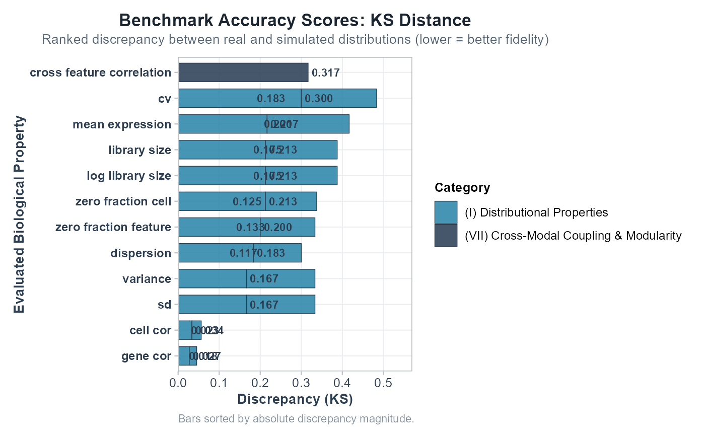

Plot Benchmark Summary Metrics (Ranked Bar Chart)
Source:R/10_visualizations.R
plot_benchmark_summary.RdDisplays a ranked horizontal bar chart of evaluated benchmarking discrepancy metrics across biological properties, colored by canonical evaluation category.
Usage
plot_benchmark_summary(
benchmark_results,
category = NULL,
modality = NULL,
metric_type = "KS",
top_n = NULL,
palette = NULL
)Arguments
- benchmark_results
A data frame from
evaluate_multiomics_accuracy()$benchmark_summary_tableorevaluate_simulation_accuracy()$metrics_summary_table, or the full result list.- category
Optional character string or vector to filter by evaluation category.
- modality
Optional character string to filter by omics modality.
- metric_type
Character. Distance metric to plot. Default
"KS".- top_n
Integer. Show only top N properties. Default
NULL(all).- palette
Optional named color vector. If
NULL, uses canonical palette.
Examples
data(example_multiomics)
res <- evaluate_multiomics_accuracy(
example_multiomics$ref_multi,
example_multiomics$sim_multi,
verbose = FALSE
)
p <- plot_benchmark_summary(res$benchmark_summary_table, metric_type = "KS")
if (requireNamespace("ggplot2", quietly = TRUE)) print(p)
